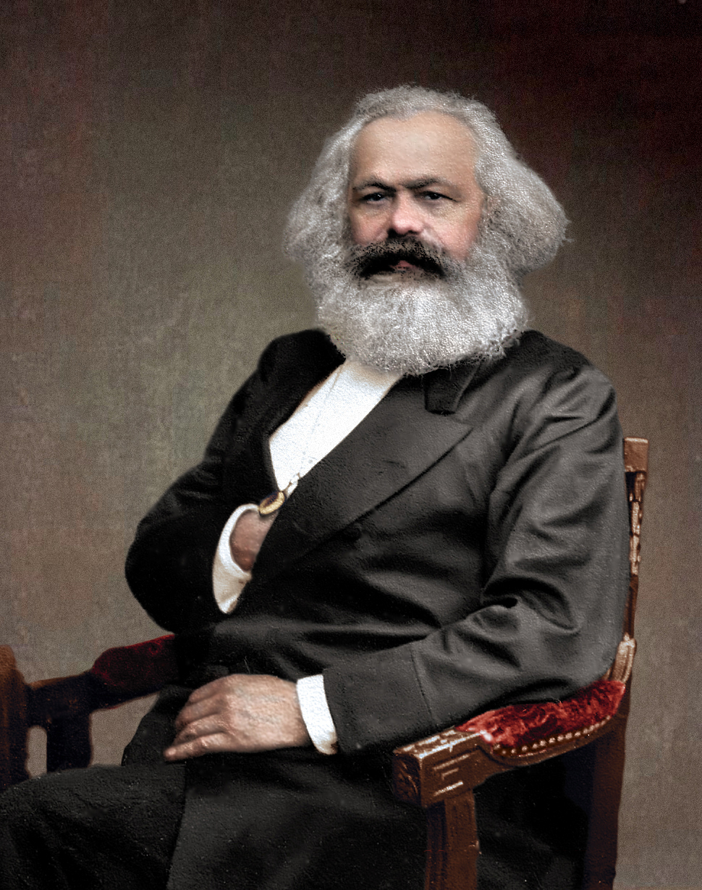
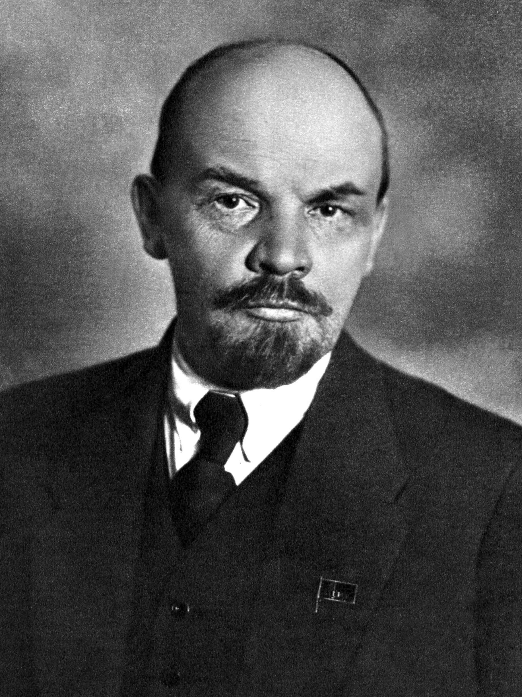
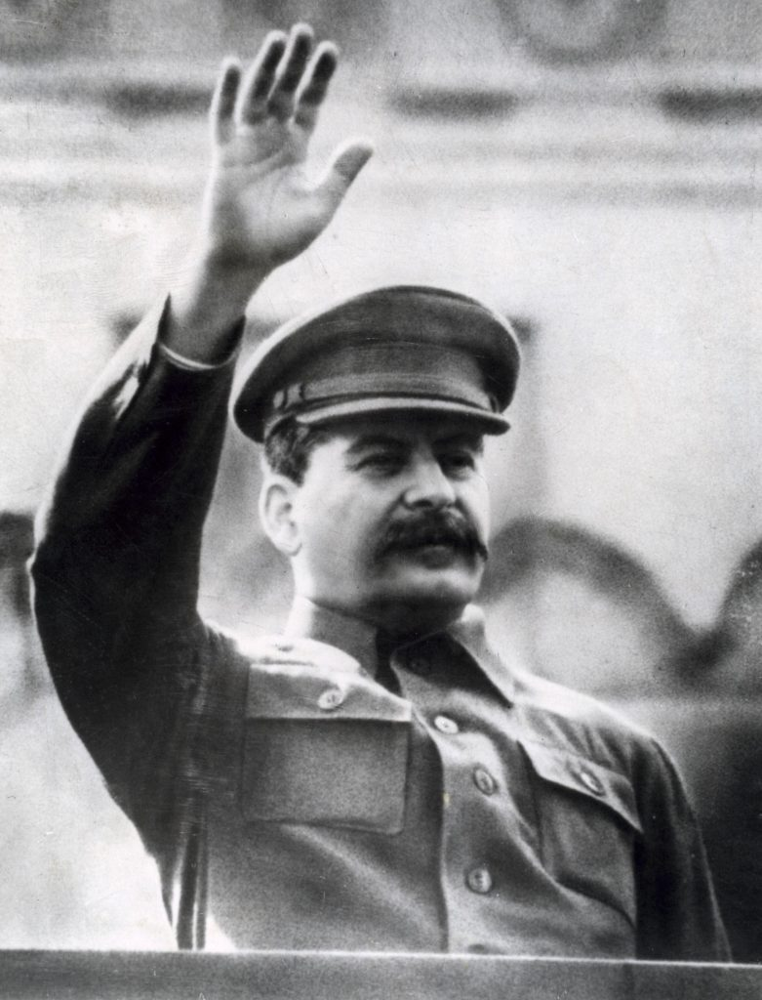
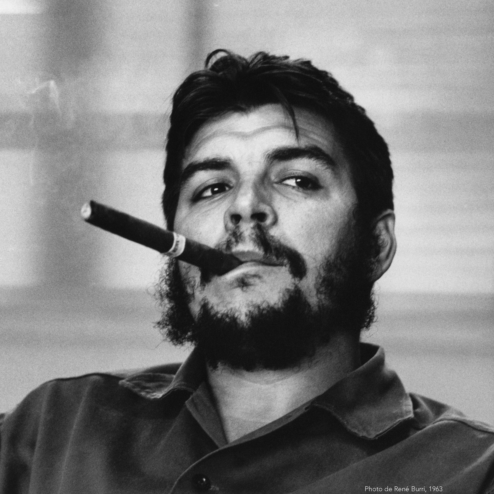
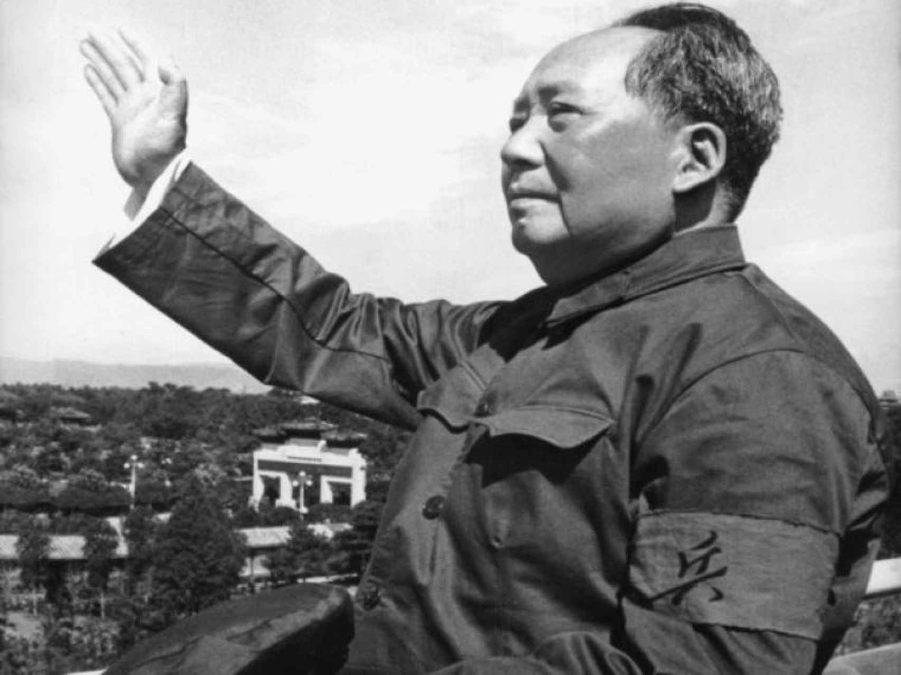
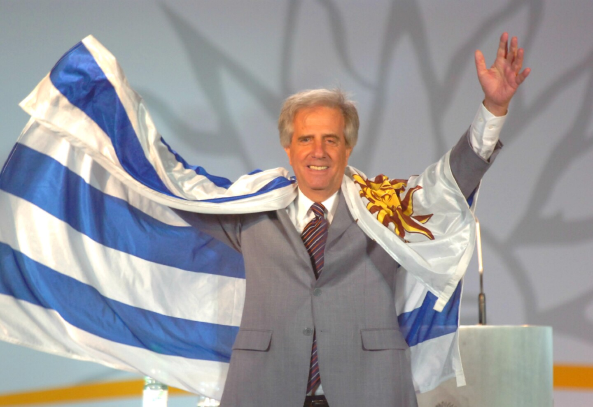
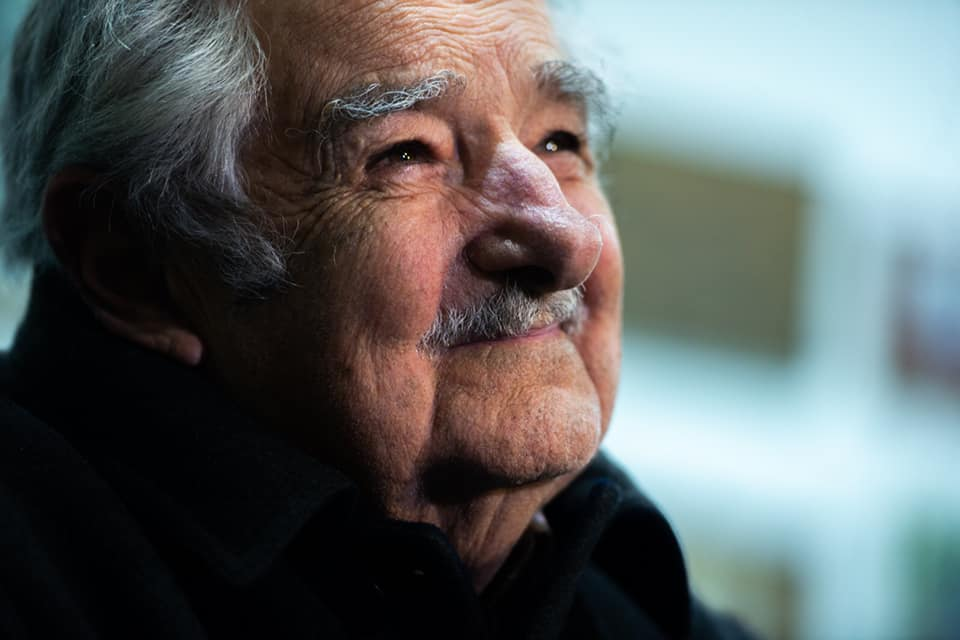
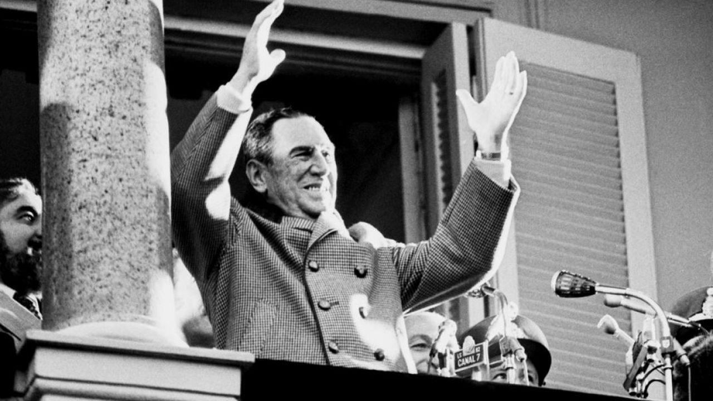
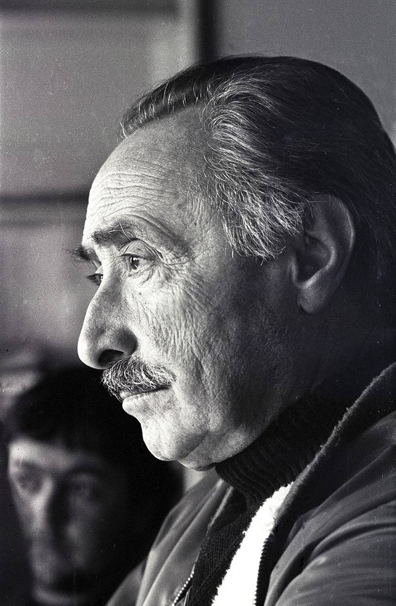

Pensamiento
Karl Marx
Filósofo, economista y periodista alemán. Su crítica del capitalismo, elaborada junto con Friedrich Engels y desarrollada en obras como El capital, influyó profundamente en los movimientos obreros y socialistas.
Historia e ideas
Una entrada breve a figuras vinculadas con distintas tradiciones de izquierda. Incluirlas no significa equiparar sus proyectos ni omitir conflictos, autoritarismos o consecuencias históricas.
Este archivo está en construcción. Cada ficha ofrece contexto inicial y será ampliada con fuentes, cronologías y materiales visuales.

Pensamiento
Filósofo, economista y periodista alemán. Su crítica del capitalismo, elaborada junto con Friedrich Engels y desarrollada en obras como El capital, influyó profundamente en los movimientos obreros y socialistas.

Revolución rusa
Dirigente bolchevique y figura central de la Revolución de Octubre de 1917. Encabezó la creación del Estado soviético y un modelo político de partido único cuya herencia continúa siendo objeto de debate.

Unión Soviética
Condujo la Unión Soviética durante su industrialización y la derrota del nazismo, pero también fue responsable de purgas, deportaciones, represión política y un sistema autoritario con enormes costos humanos.

América Latina
Médico y revolucionario argentino-cubano. Participó en la Revolución Cubana, ejerció cargos en el nuevo gobierno y promovió la lucha guerrillera internacionalista en África y América Latina.

China
Principal dirigente de la Revolución China y fundador de la República Popular en 1949. Sus campañas transformaron el país, pero el Gran Salto Adelante y la Revolución Cultural causaron persecución y graves pérdidas humanas.

Uruguay
Médico y presidente de Uruguay entre 2005–2010 y 2015–2020. Fue el primer dirigente del Frente Amplio en llegar a la Presidencia y encabezó reformas sociales, sanitarias y tributarias.

Uruguay
Exguerrillero tupamaro, legislador y presidente entre 2010 y 2015. Su gobierno impulsó reformas progresistas y su figura alcanzó proyección internacional por su discurso austero y humanista.

Argentina
Presidente argentino en tres períodos y fundador de un movimiento político heterogéneo. El peronismo articuló derechos laborales, nacionalismo económico y una relación central con el movimiento sindical.

Uruguay
Militar, dirigente político y fundador del Frente Amplio en 1971. Preso durante la dictadura, fue una referencia en la unidad de las izquierdas y en la recuperación democrática uruguaya.